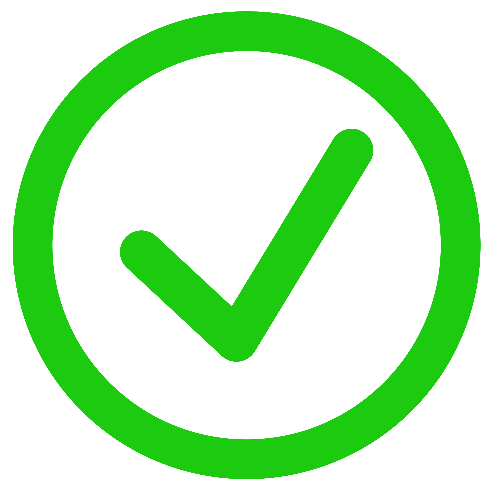

<div class="taskLine" (dblclick)="toggleTask(task)" [ngClass]="{'concluded' : task.finished}">
    <h1>{{task.task_name}}</h1>
    <div class="iconSection" [ngClass]="{growbar : task.finished}">
        
        <fa-icon [icon]="faTrash" class="fa-solid fa-3x faTrash" (click)="deleteTask(task)"></fa-icon>
    </div>
</div>